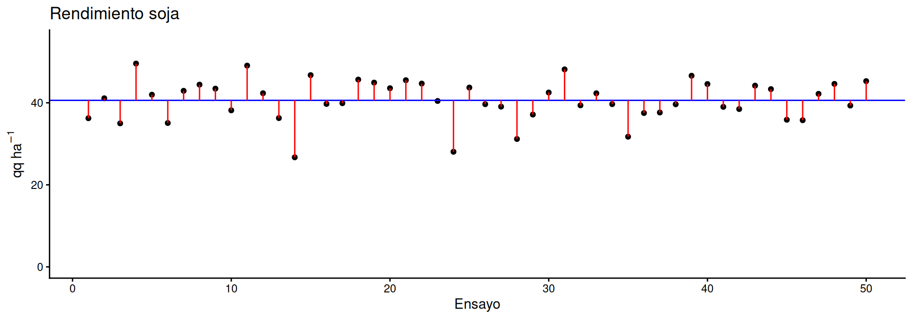
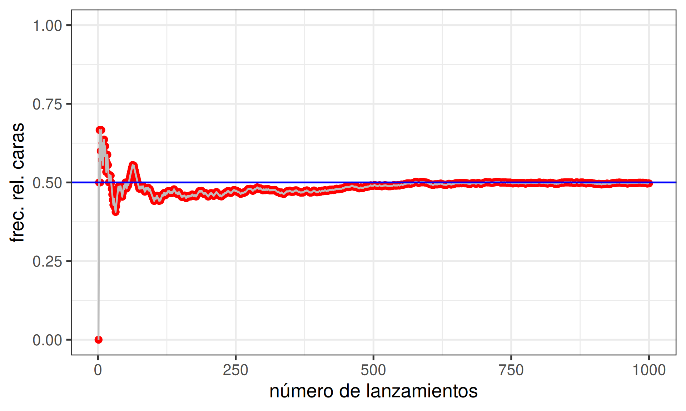
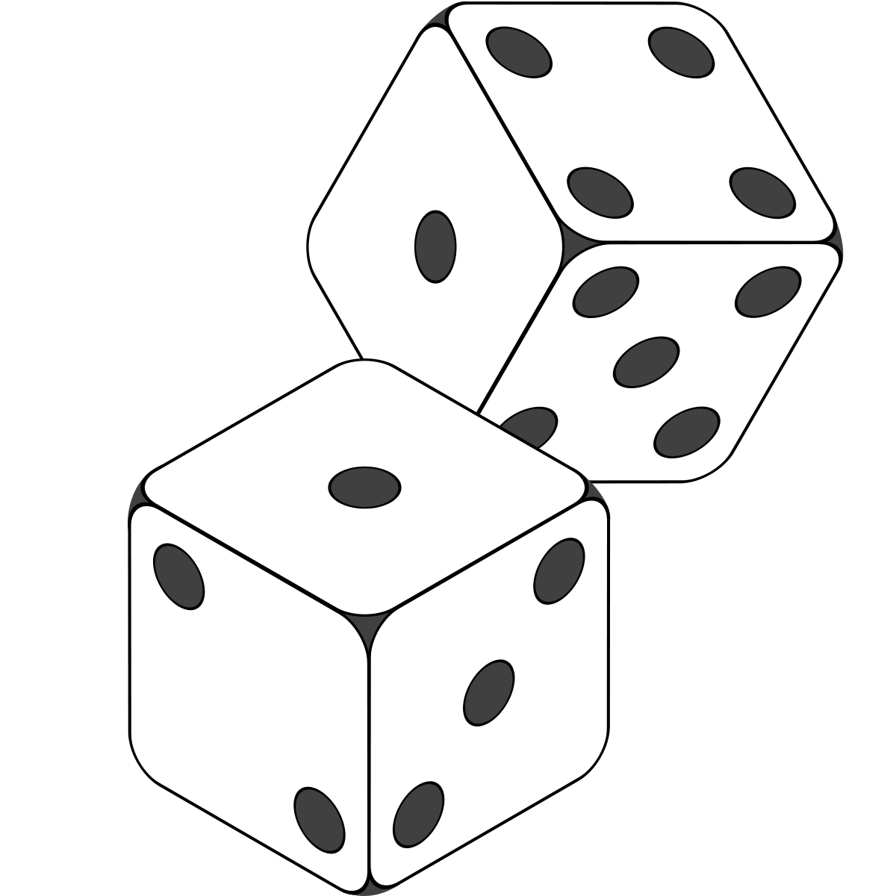
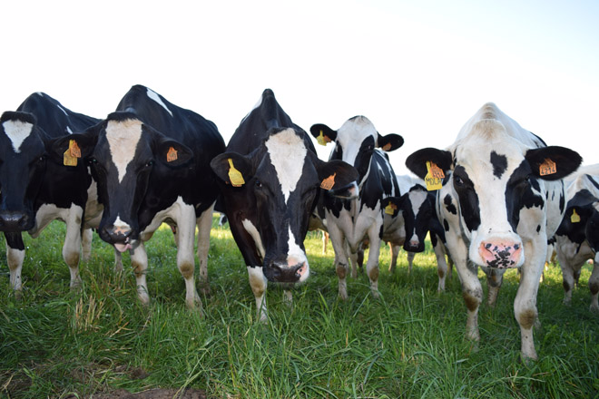
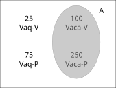
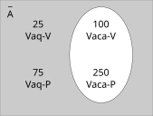
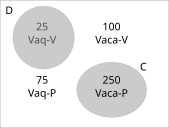
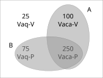

Probabilidad
Estadística Básica | 2026
Hoja de ruta
- Definiciones de probabilidad
- Regla del complemento
- Regla de la suma
- Regla multiplicación
- Probabilidad condicional
- Reglas de conteo
\[ \newcommand{\LI}{\text{LI}} \newcommand{\LS}{\text{LS}} \newcommand{\MC}{\text{MC}} \]
¿Qué es la probabilidad?
Medida de certidumbre (entre 0 y 1) asociada a la ocurrencia de un evento o suceso futuro que resulta de un proceso estocástico
Procesos biológicos tienen componentes
- determinísticos, que podemos explicar y predecir
- estocásticos, que no podemos predecir pero si aproximar su distribución de probabilidad.

Algunas definiciones
Experimento aleatorio (\(E\)) procedimiento con reglas definidas cuyo resultado no puede predecirse, es al azar.
Lanzar una moneda
Espacio muestral conjunto de resultados asociados a un experimento
Cara o cruz
Suceso o evento (\(S\)) cualquier resultado o consecuencias de \(E\). Simple si no puede desglosarse o compuesto combinación de dos o más sucesos simples
Que sea cara
Suceso complementario \(\bar{S}\) todos los resultados en los que el suceso \(S\) no ocurre
Que no sea cara
Otro ejemplo
Experimento aleatorio (\(E\))…
Pesar los terneros al nacer
Espacio muestral…
todos los pesos posibles de los terneros al nace
Suceso o evento (\(S\))…
que el ternero pese más de 40 kg
Suceso complementario \(\bar{S}\)…
que el ternero pese 40 kg o menos
Otro ejemplo
Experimento aleatorio (\(E\))…
Pesar un ternero al nacer y registrar el sexo de la cría recién nacida
Espacio muestral…
todos los terneros o terneras de distintos pesos
Suceso o evento (\(S\))…
ternero hembra de menos de 40 kg (compuesto: ternero hembra + peso menor a 40 kg)
Suceso complementario \(\bar{S}\)…
terneros machos (cualquer peso) y ternero hebra que pese 40 kg o más
¿Cómo se definen las probabilidades?
Por frecuencias relativas
\(P(A)\) se estima a partir de la repetición del experimento aleatorio un gran número de veces
\[ P(A) = \dfrac{\text{# de veces que ocurre A}}{\text{# veces que se repite el experimento}} \]
El experimento tiene que ser repetible!
Ejemplo
lanzamiento de una moneda legal

Después muuuchos lanzamientos se estabiliza en P = 0.5, 50% probabilidad que salga cara o seca.
Clásica
Conteo a priori del número de sucesos simples distintos e igualmente probables.
\[P(A) = \dfrac{\text{# formas que puede ocurrir A}}{\text{# sucesos simples}}\]
Ejemplo
en un dado legal cada cara tiene la misma probabilidad de salir entonces, que salga un 4 es uno de los 6 resultados equiprobables

\[P(X = 4) = \dfrac{1}{6}\]
Subjetiva
Se estima \(P(A)\) en base al conocimiento del sistema.
No hay experimento repetible o datos para generar una frecuencia.
Es una creencia personal.
Ejemplo
Un ingeniero agrónomo con 20 años de experiencia recorre visualmente un lote y, sin hacer ninguna medición ni consultar datos previos, dice:
Yo diría que hay un 65% de probabilidad de que este suelo tenga compactación subsuperficial:
\[P(X = \text{degradado}) = 0.65\]
Caso de estudio

| Categoría |
Tacto
|
|
|---|---|---|
| preñada | vacía | |
| Vaca | 250 | 100 |
| Vaquillona | 75 | 25 |
En un rodeo lechero hay 450 hembras entre vacas y vaquillonas. Luego del servicio se realiza el tacto y se determina si se encuentran preñadas o vacías.
Si tomamos un animal al azar de este rodeo: ¿cual es la probabilidad de que sea
- vaca (\(A\))?
- vaquillona (\(\bar{A}\))?
- vaca preñada (\(C\)) o vaquillona no preñada (\(D\))?
- vaca (\(A\)) o preñada (\(B\))?
- vaca (\(A\)) y preñada (\(B\))?
¿Cuál es la probabilidad de elegir vaca (\(A\))?

Aplicando la definición clásica:
\[ \begin{align} P(A) &= \dfrac{\text{# Vacas}}{\text{# Vacas + # Vaquillonas}} \\ &= \dfrac{100+250}{100+250+75+25} = \dfrac{350}{450} = 0.778 \end{align} \]
¿Cuál es la probabilidad de elegir vaquillona (\(\bar{A}\))?

Aplicando la definición clásica:
\[ \begin{align} P(\bar{A}) &= \dfrac{\text{# Vaquillonas}}{\text{# Vacas + # Vaquillonas}} \\ &= \dfrac{75+25}{100+250+75+25} = \dfrac{100}{450} = 0.222 \end{align} \]
O bien, sabiendo que \(P(A) + P(\bar{A}) = 1\) se puede aplicar la regla del complemento:
\[P(\bar{A}) = 1 - P(A) = 1 - 0.778 = 0.222\]
¿Cuál es la prob. de elegir vaca preñada (\(C\)) o vaq. no preñada (\(D\))?

\(C \cap D = \emptyset\), entonces son sucesos mutuamente excluyentes (SME)
Aplicando regla de la suma para SME:
\[ \begin{align} P(CoD) &= P(C \cup D) \\ &= P(C) + P(D) \\ &= \dfrac{250}{450}+\dfrac{25}{450} \\ &= 0.556 + 0.056 = 0.611 \end{align} \]
¿Cuál es la probabilidad de elegir vaca (\(A\)) o preñada (\(B\))?

\(A \cap B \neq \emptyset\), entonces son sucesos NO mutuamente excluyentes (SNME)
Aplicando la regla de la suma para SNME:
\[ \begin{align} P(AoB) &= P(A \cup B) \\ &= P(A) + P(B) - P(A \cap B) \\ &= \dfrac{350}{450} + \dfrac{325}{450} - \dfrac{250}{450} \\ &= 0.778 + 0.611 - 0.556 = 0.833 \end{align} \]
¿Cuál es la probabilidad de elegir vaca (\(A\)) y preñada (\(B\))?
¿Sucesos dependientes o independientes?
Si \(A\) y \(B\) fueran independientes se cumpliría \(P(A\cap B) = P(A)P(B)\)
Caso contrario \(P(A y B) = P(A \cap B) = P(A) \cdot P(B | A)\)
donde: \(P(B | A) = \dfrac{P(A \cap B)}{P(A)}\) es la probabilidad condicional de \(B\) tal que \(A\)
¿Cuál es la probabilidad de elegir vaca (\(A\)) y preñada (\(B\))?
En este caso tenemos:
\[ \begin{align} P(A \cap B) &= P(A) P(B) \\ \dfrac{250}{450} &= \dfrac{350}{450} \cdot \dfrac{325}{450} \\ 0.556 &\neq 0.562 \end{align} \]
No son independientes, \(B\) depende de \(A\)
La probabilidad de \(B\) dado que ocurra \(A\) es:
\[ P(B | A) = \dfrac{250}{450} \div \dfrac{350}{450} = \dfrac{250}{350} = 0.714 \]
luego la probabilidad de que ocurran \(A\) y \(B\) a la vez
\[ \begin{align} P(A \cap B) &= P(A) \cdot P(B | A) \\ &= 0.778 \cdot 0.714 \\ &= 0.556 \end{align} \]
Reglas de conteo
Regla de conteo
Si hay \(n\) eventos que pueden ocurrir de \(k_1, k_2, \cdots, k_n\), en número de formas que pueden ocurrir a la vez es \((k_1)(k_2)\cdots(k_n)\).
Ejemplo
a partir de las 4 bases del ADN (adenina, citocina, guanina, tiamina) la cantidad de secuencias distintas de 3 bases es:
AAA CAA GAA TAA ACA CCA GCA TCA AGA CGA … CCT GCT TCT AGT CGT GGT TGT ATT CTT GTT TTT
\[ (4)(4)(4) = 64 \]
Regla factorial
Las formas distintas de acomodar los \(n\) elementos distintos de un conjunto es el producto de todos los numeros positivos iguales o menores a \(n\), es decir \(n!\).
Ejemplo
¿de cuantas formas se pueden acomodar 3 vacas en 3 bretes de un tambo?:
| Opcion | Brete1 | Brete2 | Brete3 |
|---|---|---|---|
| 1 | Vaca 1 | Vaca 2 | Vaca 3 |
| 2 | Vaca 1 | Vaca 3 | Vaca 2 |
| 3 | Vaca 2 | Vaca 1 | Vaca 3 |
| 4 | Vaca 2 | Vaca 3 | Vaca 1 |
| 5 | Vaca 3 | Vaca 1 | Vaca 2 |
| 6 | Vaca 3 | Vaca 2 | Vaca 1 |
\[3! = (3)(2)(1) = 6\]
Regla de las permutaciones
Permutaciones son el número de secuencias ordenados de tamaño \(r\) seleccionados sin reemplazo de un conjunto de \(n\) elementos diferentes. Importa el orden!
\[_nP_r = \dfrac{n!}{(n-r)!}\]
Ejemplo
si hay 10 vacas y 6 bretes, ¿que cantidad de formas distintas que se pueden acomodar las vacas?
\[\begin{align} _{10}P_{6} &= \dfrac{10!}{(10-6)!} = \dfrac{(10)(9)(8)(7)(6)(5)(4)(3)(2)(1)}{(4)(3)(2)(1)} = \\ &= (10)(9)(8)(7)(6)(5) = 151.200 \end{align}\]
Regla de las permutaciones (cont.)
Si algunos elementos son identicos a otros
\[_nP_{n_1,n_2, \dots, n_k} = \dfrac{n!}{n_1!n_2! \dots n_k!}\]
Ejemplo
si de las 10 vacas, 2 son de 1ra lactancia, 3 de 2da lactancia y el resto de más de dos lactancias:
\[_{10}P_{2,3,5} = \dfrac{10!}{2!3!5!} = 2520\]
Regla de las combinaciones
Combinaciones son el número de secuencias de tamaño \(r\) seleccionados sin reemplazo de un conjunto de \(n\) elementos diferentes. No importa el orden! ABC = ACB = BAC = BCA = CAB = CBA
\[_nC_r = \dfrac{n!}{(n-r)!r!}\]
Ejemplo
¿cuantos grupos de 6 vacas se pueden formar a partir de 10 vacas?
\[_{10}C_6 = \dfrac{10!}{(10-6)!6!} = 210\]